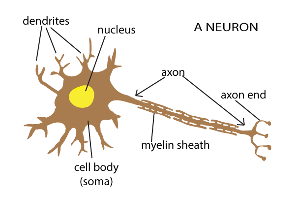

Dr. Robert Hecht-Nielsen, the inventor of one of the first neurocomputers, defines a neural network as: "...a computing system made up of a number of simple, highly interconnected processing elements, which process information by their dynamic state response to external inputs."
The idea of an Artificial Neural Network was conceived in part to process data in somewhat of a similar way to the human. The human body consists of a large network of processing units called neurons. There are approximately 86 billion neurons within the nervous system of a human capable of processing vast amounts of data.

Within each neuron there are four main components, the first being the Dendrites which accept electrical inputs in the neuron. Each input has an associated weight, which is assigned on the basis of its relative importance to other inputs. These inputs are then passed onto the Soma which sums the electrical inputs. The summed inputs are then turned into outputs by the Axon, if the sum is greater than a threshold then the neuron can ‘fire’ sending an electrical impulse out of the neuron as an output. The first to develop a conceptual model of a Neural Network was Warren McCulloch and Walter Pitts in 1943. A Neuroscientist and a logician, respectively, laid the foundation for future neural networks to be created.
A neural network is a “connectionist” computational system, where information is processed collectively, in parallel throughout a network of nodes.
One of the key elements of a neural network is its ability to learn. A neural network is a complex adaptive system, meaning it can change its internal structure based on the information flowing through it. Typically, this is achieved through the adjusting of weights.
There are several strategies that can be implemented into these adaptive systems:
Invented in 1957 by Frank Rosenblatt at the Cornell Aeronautical Laboratory, a perceptron is the simplest neural network possible: a computational model of a single neuron. Much like the neuron within the brain, which contains an input unit; Dendrites, a processing unit; Soma, and an output unit; Axon. The Perceptron is modelled with these functionalities in mind.
We will now go through the steps of the Perceptron Algorithm:
Step 1: Enter the values of the training set: X1, X2 and the Target Output.
Step 2: Follow the steps of the Algorithm by clicking the Next button.
Note: Once you have reached the second step of the Algorithm you will be asked to input the Learning rate via a slider.
If you wish to reload the demonstration at any point, press the Reload button.